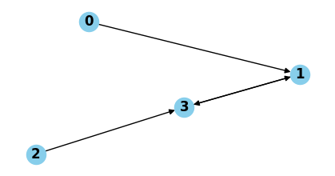
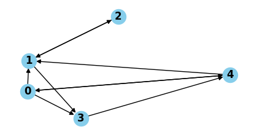

Loop Detection Tutorial#
[1]:
from loop_detection import loop_detection, Range, get_UC
from loop_detection.loop_detection_code import get_rule_set, get_aliases
from tests.random_generation import create_collection_rules, generate_fw_tables, print_from_fw_tables
Take the following fowarding tables
[2]:
# each node has a base rule H but the actions for the base rule can differ
fw_tables = {i : [] for i in range(4)}
fw_tables[0] = [('R1', Range(1,5), 1),
('R2', Range(1,4), 1),
('R3', Range(0,1), None),
('H0', Range(0,5), None)]
fw_tables[1] = [('R4', Range(2,4), 3),
('H1', Range(0,5), None)]
fw_tables[2] = [('R5', Range(0, 4), 3),
('H2', Range(0,5), None)]
fw_tables[3] = [('R5', Range(2,3), 1),
('R6', Range(4, 5), None),
('H3', Range(0,5), None)]
fw_tables
[2]:
{0: [('R1', [1, 5], 1),
('R2', [1, 4], 1),
('R3', [0, 1], None),
('H0', [0, 5], None)],
1: [('R4', [2, 4], 3), ('H1', [0, 5], None)],
2: [('R5', [0, 4], 3), ('H2', [0, 5], None)],
3: [('R5', [2, 3], 1), ('R6', [4, 5], None), ('H3', [0, 5], None)]}
[3]:
print_from_fw_tables(fw_tables)

There is a loop between 1 and 3.
Let us check the rule set of the network.
[4]:
rule_set = get_rule_set(fw_tables)
rule_set
[4]:
{'R1': (0, [1, 5], 1, 0),
'R2': (0, [1, 4], 1, 1),
'R3': (0, [0, 1], None, 2),
'H0': (0, [0, 5], None, 3),
'R4': (1, [2, 4], 3, 0),
'H1': (1, [0, 5], None, 1),
'R5': (3, [2, 3], 1, 0),
'H2': (2, [0, 5], None, 1),
'R6': (3, [4, 5], None, 1),
'H3': (3, [0, 5], None, 2)}
Note that H0, H1, H2, H3 are different names for the same rule (at different locations).
Remove such redundant copies.
[5]:
aliases = get_aliases(rule_set)
R = [(key, values[1]) for key, values in rule_set.items()]
unique_count = {key: 0 for key in aliases.keys()}
R_set = set()
for rule in R:
if unique_count[rule[1]] == 0:
R_set.add(rule)
unique_count[rule[1]] += 1
R_set
[5]:
{('H0', [0, 5]),
('R1', [1, 5]),
('R2', [1, 4]),
('R3', [0, 1]),
('R4', [2, 4]),
('R5', [2, 3]),
('R6', [4, 5])}
Let us get the uncovered combinations generated by these rules.
[6]:
UC = get_UC(R_set)
print(len(UC), 'atoms :')
for uc in UC:
print(uc.get_name(),', value =', uc)
5 atoms :
H0 & R1 & R2 & R4 & R6 , value = [4, 4]
H0 & R3 , value = [0, 1]
H0 & R1 & R2 & R3 , value = [1, 1]
H0 & R1 & R2 & R4 & R5 , value = [2, 3]
H0 & R1 & R6 , value = [4, 5]
Now, let us run the loop verification.
[7]:
result = loop_detection(fw_tables)
[8]:
if len(result) > 0:
print('Found a loop')
for res in result:
print('Loop followed by:', res[0].get_name(), ', value =', res[0])
nodes_involved = set()
for edge in res[1]:
nodes_involved.add(edge[0])
nodes_involved.add(edge[1])
print('Nodes involved:', nodes_involved)
Found a loop
Loop followed by: H0 & R1 & R2 & R4 & R5 , value = [2, 3]
Nodes involved: {1, 3}
Now, let’s test on a random network.
[23]:
gen_fw_tables = generate_fw_tables(5, max_range = 10)
print('----------------------------------------------------')
print('Fowarding table:')
print()
for key, value in gen_fw_tables.items():
print('Node', key)
for rule in value:
print(rule)
print()
print('--------------------------------------------------')
print("Graph of the whole network")
print_from_fw_tables(gen_fw_tables)
result = loop_detection(gen_fw_tables)
print('--------------------------------------------------')
nb_loops = sum(len(res[1]) for res in result)
print(nb_loops, 'loops detected')
print()
print('Details:')
print()
for res in result:
print('Atom:', res[0].get_name(), ', value =', res[0])
print(len(res[1]), 'loops')
print('Nodes involved:')
for i, cycle in enumerate(res[1]):
print('Cycle', i + 1 , ':', cycle)
print()
----------------------------------------------------
Fowarding table:
Node 0
('H0', [0, 10], 1)
('R00', [6, 9], 4)
('R10', [8, 9], 3)
Node 1
('H1', [0, 10], None)
('R01', [2, 7], 2)
('R11', [3, 5], 3)
Node 2
('H2', [0, 10], None)
('R02', [9, 10], 1)
Node 3
('H3', [0, 10], None)
('R03', [1, 2], 4)
Node 4
('H4', [0, 10], None)
('R04', [6, 8], 1)
('R14', [7, 9], 0)
--------------------------------------------------
Graph of the whole network

--------------------------------------------------
3 loops detected
Details:
Atom: H0 & R00 & R14 & R04 & R10 , value = [8, 8]
1 loops
Nodes involved:
Cycle 1 : [0, 4]
Atom: H0 & R01 & R00 & R14 , value = [7, 7]
1 loops
Nodes involved:
Cycle 1 : [0, 4]
Atom: H0 & R00 & R14 & R10 & R02 , value = [9, 9]
1 loops
Nodes involved:
Cycle 1 : [0, 4]
[ ]: